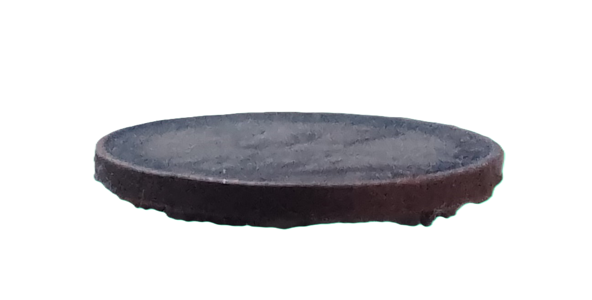

.png "Obverse of the coin")
.png "Reverse of the coin")
Obverse : Crowned Head of George V to left in high relief in the center with Engraver initials B.M. in relief on the truncation of the
shoulder.Legend GEORGE V KING AND EMPEROR OF INDIA broken by the crown, within dot circle along periphery with raised rim.
Reverse : A Talipot palm in the center with ½ සතය in Sinhala on left, •சதம் in Tamil on right, within inner circle.
• CEYLON • HALF • CENT • above, and year below in annulus within dot circle along periphery with raised rim.
